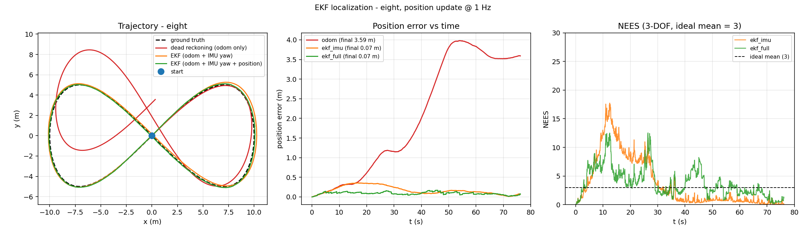
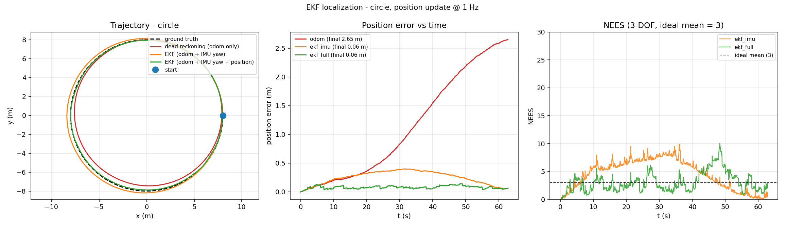
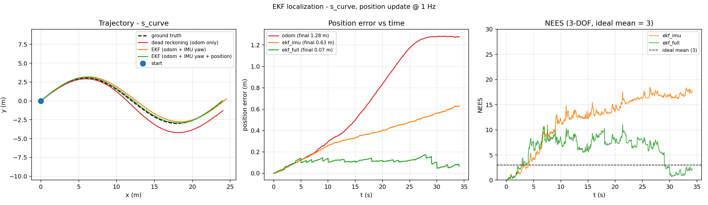
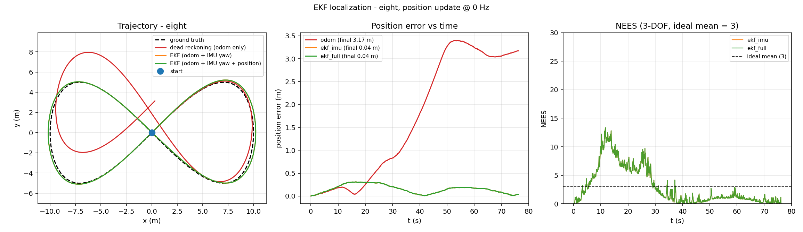

地面载具 ROS2 差速机器人 EKF 多传感器融合定位
本文档介绍 src/ground/ros2_ekf_localization 模块：差速移动机器人的多传感器融合定位实现。
与仓库中其他地面载具模块的关系：
ros2_pure_pursuit解决的是「怎么走」——路径跟踪与避障控制；- 本模块解决的是「我在哪」——把里程计、IMU 与位置观测融合成一个带协方差的位姿估计。
两者是同一套自主导航流程的前后段，接口天然衔接：EKF 输出的 /odometry/filtered
可以直接喂给纯追踪控制器作为定位输入。
与本模块实现方式相近的是"不依赖 CARLA / Gazebo / 任何仿真器"：
核心算法与闭环仿真只用 NumPy，因此在没有 GPU、没有仿真环境的机器上也能完整复现，
同时提供 ROS 2 (Humble) 节点与 ros2 launch 入口。
- 源代码目录：
src/ground/ros2_ekf_localization - 一键复现：
cd src/ground/ros2_ekf_localization && python3 sim/run_sim.py --traj eight - 一键检查：
bash ci/run_ci.sh（语法 → 依赖 → 测试 → 仿真 → 基准，五阶段）
1. 系统架构
/odom ─────────▶ (v, ω) ────┐
│ ┌───────────────┐ /odometry/filtered
/imu ────▶ yaw 观测 ────────┼─────▶│ EKF 预测/更新 │──────────▶ 位姿 + 协方差
│ │ 角度归一化 │
/pose_measurement ──▶ (x, y) ┘ └───────────────┘ /ekf_info
│
诊断：NEES / 数据新鲜度
数据流刻意分成两条时间线：
- 预测（按固定周期推进，用真实时间差 $\Delta t$）：只有里程计参与；
- 更新（观测到达即生效，在回调里执行）：IMU 航向与位置观测各自独立进入滤波器。
观测不等下一个预测周期才生效，否则高频 IMU（20~100 Hz）会被白白浪费。
2. 状态量与运动学模型
状态取平面位姿：
控制量取轮式里程计输出的线速度 $v$ 与角速度 $\omega$，差速运动学一阶欧拉离散：
协方差 $P$ 为 $3\times3$，描述位置与航向的不确定度。
3. 预测步
线性化后的雅可比：
过程噪声不拍一个常数对角阵，而是写成控制噪声经映射矩阵 $G$ 传递到状态空间：
预测：$\hat x = f(x, u)$，$\hat P = FPF^T + Q$。
这样做的物理意义是：控制噪声作用在 (v, ω) 上。直线行驶时角速度噪声几乎不污染位置， 原地转向时线速度噪声几乎不污染航向——这比"三个方向各给一份常数方差"更贴合真实机器人的误差传播。
4. 更新步
支持两类观测：
| 观测来源 | 量测 $z$ | 观测矩阵 $H$ | 量测噪声 $R$ |
|---|---|---|---|
| IMU 航向 | $\theta$ | $[0\ 0\ 1]$ | $\sigma_{\text{imu}}^2$ |
| 绝对位置（GPS / UWB / 视觉路标） | $[p_x\ p_y]^T$ | $$ | $\sigma_{\text{pos}}^2 I$ |
卡尔曼增益与更新：
4.1 Joseph 形式
协方差更新采用 Joseph 形式而非 $(I-KH)P$：
两种写法在精确算术下等价，但 Joseph 形式在浮点实现中能更好地保持对称正定性—— 这在长时间运行、反复更新上千次的场景里是实打实的好处（代码中另加了一层显式的对称化与对角下限保护）。
4.2 角度残差归一化
航向残差必须折算到 $(-\pi, \pi]$：
否则当估计值接近 $-\pi$、观测接近 $+\pi$ 时，残差会被算成 $6.2$ rad 而不是 $0.08$ rad，
滤波器会被这个虚假的大残差猛地拽走。该行为由
test_yaw_residual_is_normalized_across_pm_pi 回归锁定。
5. 一致性评估：NEES
只看位置误差无法判断滤波器自己是否可信。归一化估计误差平方（NEES）给出了自评手段：
状态维数为 3 时，滤波器一致（估计误差与自评协方差相符）时 $\varepsilon$ 的均值应接近自由度 3。
- $\varepsilon$ 远大于 3：滤波器过于自信（协方差偏小），或传感器存在未建模的系统性偏差；
- $\varepsilon$ 远小于 3：滤波器过于保守（协方差偏大），白白浪费了观测的修正能力。
这套指标让「噪声参数怎么定」变成可验证的事，而不是拍脑袋。
6. 噪声参数调参与模型失配诊断
里程计的误差分三类，作用方式完全不同：
| 误差类型 | 来源 | 特性 | 滤波器能否处理 |
|---|---|---|---|
| 比例误差 | 轮径标定不准、左右轮不等 | 随距离累积 | 不能，只能靠绝对观测纠正 |
| 高斯白噪声 | 传感器随机扰动 | 不累积 | 能平滑掉 |
| 常值偏置 | IMU 零偏 | 缓慢累积 | 只能靠其他观测约束 |
比例误差是系统性偏差，EKF 的线性模型无法建模（把它当白噪声处理会低估误差）， 工程上的常规做法是适当放大过程噪声，让滤波器的自评置信度与实际误差相符。
本实现取 $\sigma_v = \sigma_w = 0.15$、$\sigma_{\text{imu}} = 0.05$、$\sigma_{\text{pos}} = 0.15$， 明显大于里程计的白噪声标称值（0.03 m/s），正是为了吸收那部分未建模的比例误差。 调参结果可以直接用 NEES 验证——第 9 节表 C 给出了这组参数的诊断价值。
7. 安全与数值保护
| 环节 | 处理 |
|---|---|
/odom 超时或从未收到 |
跳过预测，只发布上一次估计（不在不可信的控制量上递推） |
/imu、/pose_measurement 超时 |
停止对应观测更新；诊断信息里给出 *_stale 与 *_age |
| 噪声参数 $\sigma \le 0$ 或非有限 | 回退默认值并告警（$\sigma = 0$ 会让滤波器把预测当真理） |
| 观测含 NaN、四元数非法 | 拒绝该帧，计入 rejected_updates |
| 协方差失去对称性 / 出现非有限值 | 对称化、对角夹紧、必要时重置，计入 cov_repairs |
| 时钟异常、调度延迟过大 | $\Delta t$ 退回标称周期，避免超大步长把状态推飞 |
这些逻辑全部落在 ekf.py 与 safety.py 两个不依赖 rclpy 的模块里，
因此可以在无 ROS 环境下被单元测试直接覆盖。
8. ROS2 中部署
colcon build --packages-select ros2_ekf_localization
source install/setup.bash
ros2 launch ros2_ekf_localization localize.launch.py
节点 ekf_localization_node 的话题约定：
| 方向 | 话题 | 类型 | 说明 |
|---|---|---|---|
| 订阅 | /odom |
nav_msgs/Odometry |
取 twist 的线速度与角速度 |
| 订阅 | /imu |
sensor_msgs/Imu |
四元数转 yaw 后作为航向观测 |
| 订阅 | /pose_measurement |
geometry_msgs/PoseWithCovarianceStamped |
绝对位置观测，自带协方差时优先采用 |
| 发布 | /odometry/filtered |
nav_msgs/Odometry |
滤波后位姿，协方差填入 x、y、yaw 对角元 |
| 发布 | /ekf_info |
std_msgs/String |
JSON 诊断：协方差迹、数据年龄、拒绝计数 |
四元数转 yaw 使用标准公式：
9. 实验结果
9.1 场景设置
- 真值轨迹三条：圆形（$R=8$ m）、8 字形（利萨如 $a=10,\ b=5$ m）、S 形（$L=24$ m，$A=3$ m）；
- 轨迹按等弧长重采样，再反推 $(v, \omega)$——这样无噪声时里程计积分可严格复现真值， 仿真里的误差能明确归因到传感器噪声，而不是采样方式；
- 里程计：线速度比例误差 2%、角速度比例误差 5%、白噪声 0.03 m/s 与 0.02 rad/s；
- IMU：航向噪声 0.03 rad、常值偏置 0.01 rad；位置观测：噪声 0.15 m，频率可调；
- 期望速度 0.8 m/s，控制周期 0.05 s。
9.2 三种定位模式对比（位置观测 1 Hz）
| 轨迹 | 模式 | 末端误差 (m) | 最大误差 (m) | RMS (m) | 末端航向误差 (rad) | NEES 均值 |
|---|---|---|---|---|---|---|
| circle | 纯航位推算 | 2.650 | 2.650 | 1.451 | 0.3066 | — |
| circle | EKF（+IMU 航向） | 0.059 | 0.399 | 0.275 | 0.0197 | 4.57 |
| circle | EKF（+位置观测） | 0.064 | 0.143 | 0.083 | 0.0197 | 3.03 |
| eight | 纯航位推算 | 3.591 | 3.981 | 2.520 | 0.0028 | — |
| eight | EKF（+IMU 航向） | 0.070 | 0.357 | 0.199 | 0.0028 | 3.70 |
| eight | EKF（+位置观测） | 0.074 | 0.169 | 0.096 | 0.0021 | 3.82 |
| s_curve | 纯航位推算 | 1.278 | 1.283 | 0.820 | 0.0163 | — |
| s_curve | EKF（+IMU 航向） | 0.628 | 0.629 | 0.388 | 0.0159 | 12.19 |
| s_curve | EKF（+位置观测） | 0.069 | 0.171 | 0.110 | 0.0159 | 6.04 |
三条结论：
- 纯航位推算不可用：误差随行驶距离单调累积，RMS 达 0.82~2.52 m，末端偏差最大 3.59 m；
- 只加 IMU 航向只能约束航向：位置仍会缓慢发散（S 形轨迹上末端误差 0.63 m， NEES 升到 12.2，正是在提示"滤波器已经不相信自己了"）；
- 接入绝对位置观测后误差下降一个数量级：RMS 0.083~0.110 m， 且 NEES 回到 3~6 的一致区间，滤波器自评与实际误差相符。
9.3 位置观测频率的影响（8 字形，全融合）
| 位置观测频率 (Hz) | 末端误差 (m) | 最大误差 (m) | RMS (m) | NEES 均值 |
|---|---|---|---|---|
| 0 | 0.037 | 0.309 | 0.179 | 2.96 |
| 0.2 | 0.057 | 0.249 | 0.130 | 3.34 |
| 0.5 | 0.105 | 0.268 | 0.112 | 3.80 |
| 1 | 0.074 | 0.169 | 0.096 | 3.82 |
| 2 | 0.048 | 0.141 | 0.079 | 4.42 |
| 5 | 0.057 | 0.108 | 0.058 | 3.90 |
观测频率越高，最大误差与 RMS 单调下降；0.2 Hz 就已能显著抑制漂移， 说明该场景对位置观测的时延并不敏感——这对选型很友好（1~2 Hz 的 GNSS/UWB 足够用）。
9.4 模型失配诊断
把里程计的比例误差放大、而滤波器参数保持不变，NEES 会立刻反映出来：
| 比例误差 (v / ω) | 末端误差 (m) | RMS (m) | NEES 均值 | 判定 |
|---|---|---|---|---|
| 0.02 / 0.05 | 0.074 | 0.096 | 3.82 | 一致 |
| 0.04 / 0.10 | 0.133 | 0.141 | 6.59 | 一致 |
| 0.08 / 0.20 | 0.254 | 0.252 | 17.48 | 不一致，需重新标定 |
| 0.15 / 0.35 | 0.466 | 0.457 | 53.45 | 不一致，需重新标定 |
这就是 NEES 的工程价值：误差变大时，能立刻区分"随机噪声变大"和"模型错了"， 后者必须去标定轮径，而不是继续调滤波器参数。
9.5 轨迹与误差曲线




10. 测试与可复现性
python3 tests/test_core.py 共 28 项，全部通过；bash ci/run_ci.sh 一条命令跑完
语法 → 依赖 → 测试 → 仿真 → 基准 五个阶段。关键回归测试：
| 测试 | 锁定的行为 |
|---|---|
test_process_jacobian_matches_numeric |
协方差传播用的解析雅可比与数值差商一致 |
test_yaw_residual_is_normalized_across_pm_pi |
±pi 边界处航向残差不绕远路 |
test_nan_observation_is_rejected |
NaN 观测被拒绝且不污染状态 |
test_invalid_predict_input_is_rejected |
非有限控制量 / 非正 dt 被拒绝 |
test_noiseless_odometry_reproduces_ground_truth |
无噪声时里程计积分严格复现真值（实验设计自检） |
test_ekf_fusion_beats_dead_reckoning |
融合定位误差显著低于纯航位推算 |
test_nees_of_fused_filter_is_consistent |
NEES 均值落在一致性区间 |
test_long_run_does_not_diverge |
2000 步长跑不出现 NaN 或协方差爆炸 |
test_repair_covariance_* |
协方差对称化、NaN 重置、对角夹紧 |
test_sanitize_sigma_rejects_non_positive |
非法噪声参数回退默认值 |
11. 局限与展望
- 里程计比例误差目前只作为噪声被"吸收"，尚未做在线标定（把轮径误差建模为增广状态是一个自然的后续方向）；
- 位置观测假定为硬约束下的高斯噪声，未建模野值（可用卡方门限做异常观测剔除）；
- 只做平面三状态位姿，未估计轮速、IMU 零偏等参数；
- 仿真使用合成传感器，尚未在 Gazebo / CARLA 中接入真实话题验证。